The feed
Follow friends and see the drinks they post, with their photos and captions.

2,089 cocktails and spirits, every cocktail with its real recipe. Post the ones you have had, with your own photo.
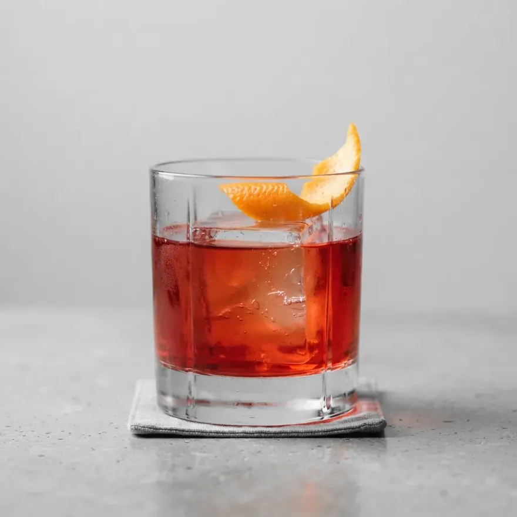
2,089 entries
Every cocktail and every bottle has an entry: the glass it belongs in, where it comes from, and for every cocktail, the real recipe.
Search it, filter it by flavour, spirit or kind, or scroll and find something you have never heard of.
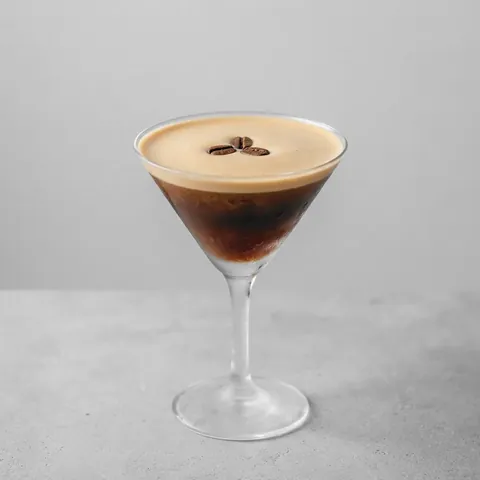
Nº 0004
Espresso Martini
Creamy & dessert
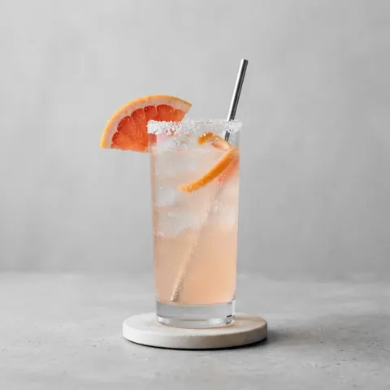
Nº 0025
Paloma
Highball
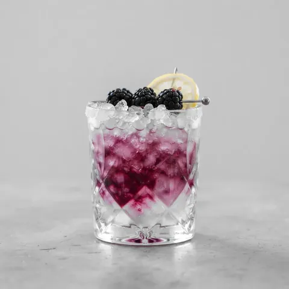
Nº 0040
Bramble
Modern classic
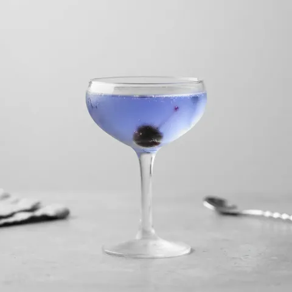
Nº 0092
Aviation
Sour
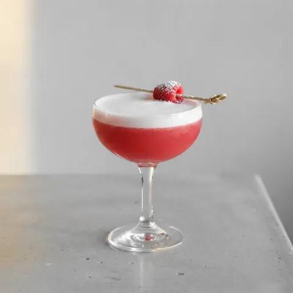
Nº 0097
Clover Club
Sour
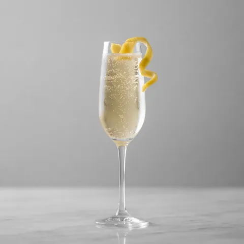
Nº 0117
French 75
Sparkling
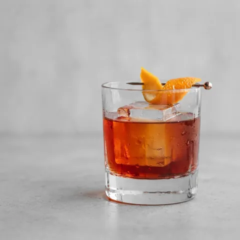
Nº 0122
Boulevardier
Spirit-forward
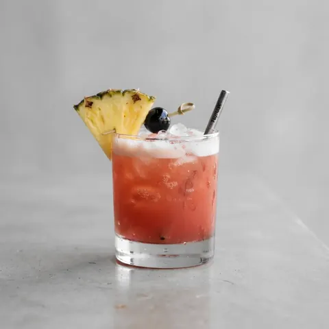
Nº 0137
Jungle Bird
Tiki
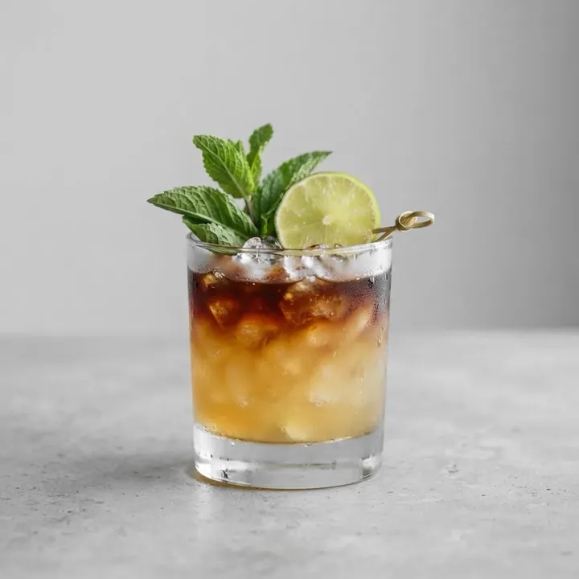
Build, measures and method for every cocktail; base, distillation and ageing for every spirit. Written to be read while you mix, not scrolled past.
Mai Tai
Nº 0145Tiki & tropical cocktail from Oakland, USA
Each drink you post lands on your profile with your own photograph of it, not a stock picture of someone else's glass. Write down a drink the Dex does not have, recipe and all, and it gets a page of its own.
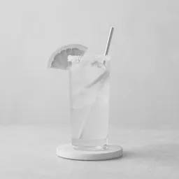
Names are examples
Follow friends and see the drinks they post, with their photos and captions.
Host a tournament with people you follow: one shared log of the drinks each of you posts between the dates you pick. No prizes, and how much anyone drinks is never counted or shown.
Save any drink or post to come back to, and sort them into collections. Share a collection by link, and stop sharing whenever you like.
Tag the people you were with on a post, and they see it in Activity. Anyone you tag can remove themselves.
On iOS 18 or later, add the place to a post, found with Apple Maps. A drink's own page shows where people have had it.
Sipply does not sell alcohol and cannot be used to order it. It is a reference and a diary, nothing more.
Read the privacy policy